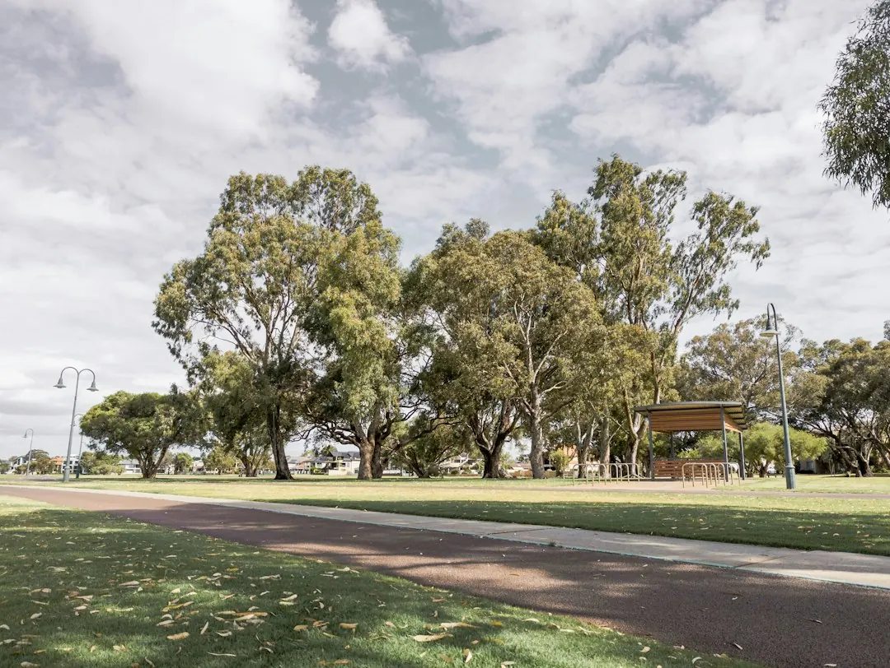

Perth landscaping costs are shaped by access, soil preparation, levels, materials and the amount of hardscape involved. Sandy ground may need soil conditioner or organic matter, while paving requires a firm, well-drained base and turf needs suitable preparation. Retaining walls on sloping or boundary sites can raise approval and engineering questions. Compare quotes by checking that they include the same preparation, materials, reticulation zones and finishing work.
For homeowners comparing landscaping services perth options, the practical decision is how the block, materials, water supply and proposed garden design affect the work and the quote.
Landscaping Services Perth Explained
Landscapers Perth describes Perth gardens as projects shaped by sandy soil, summer heat and local water rules. Those conditions influence the preparation needed before plants, turf, paving or retaining materials are installed.
Much of the metro area has fast-draining sand that holds little water or nutrient. Ask how garden beds and turf areas will be improved with soil conditioner or organic matter, and how access will affect machinery, removal work and delivery of materials. A rough site size is useful, but it does not explain the whole quote. Slope, shade, existing trees and the available working space can change the amount of preparation required.
Local conditions create different questions without making suburb names a substitute for a site inspection. Coastal locations such as Cottesloe and Scarborough may require discussion of salt wind, while Kalamunda sites may involve hills and slopes. Newer estates such as Baldivis or Ellenbrook may begin with bare builder's sand. The relevant question is what condition applies to the particular block.
Match the service to the job
A full garden makeover may combine beds, turf, plants, mulch and edging, while a narrower project may only need lawn installation, paving, reticulation or a retaining wall. Landscape design can set out the layout, plants and hard surfaces before construction is quoted, which helps separate design decisions from construction allowances.
Reticulation should be planned around the water source and the needs of different planting areas. Bore or scheme water, rain sensors, separate zones for lawns and beds, and a controller can all affect the design. Pipes are best laid before turf, paving and mulch go down, so the quote should make the installation order clear.
Hardscape choices also change the preparation. Paths, patios and pool surrounds need a firm, well-drained base. New turf needs prepared sand and grass selected for the available sun, shade and watering. Limestone and block retaining can hold sloping or sandy blocks level, but the site may also require council or engineering checks.
- Choose design support when the layout, planting and hard surfaces need to be resolved together.
- Choose a focused service when the main requirement is turf, paving, reticulation or retaining.
- Ask which work must happen first so later finishes do not require excavation or rework.
Compare quotes line by line
Two landscaping quotes are only comparable when they describe similar work. Check whether each one includes soil preparation, disposal, base preparation, materials, edging, reticulation zones, turf, mulch and final cleanup. A lower total may reflect fewer inclusions rather than a different rate for the same job.
Ask the contractor to identify the assumptions behind access, levels and existing conditions. Site access can affect machinery and material handling. Levels can determine whether retaining is needed. The amount of paving or other hardscape can change the balance between preparation and visible finishing work.
For a first enquiry, provide the suburb, job type, rough size, access details and any photos or plans. Also note whether the property has a slope, existing trees, shade, a bore or scheme water. These details give the person preparing the quote a more useful starting point than a general request for a garden makeover.
The separate guide to Perth landscaping cost factors is useful when you want to review the elements that sit behind a quoted total.
Approval and workmanship questions
Retaining deserves early attention when a wall is near a boundary or the block slopes. Check with the relevant local council about permits and engineering, and speak with neighbours early if a shared boundary is involved. The appropriate construction material may be limestone or block, depending on the site and the proposed wall.
Where a project combines several trades, ask which licences and insurance apply to the work and request current certificates. The source guidance specifically identifies bore reticulation and retaining near a boundary as situations where different professional responsibilities may arise. Public liability cover is another item to confirm before work begins.
For paving, ask how the base will be prepared and compacted on Perth sand. For turf, ask how the sand will be prepared and how the grass choice fits the available sun, shade and watering. For reticulation, ask how lawns and garden beds will be separated into zones and where the controller and sensors will sit.
Who this guide applies to
This guide is for Perth homeowners planning a full garden makeover, new lawn, artificial grass, paving, a retaining wall or reticulation. It also suits people comparing a landscape designer with a landscaper, real turf with artificial grass, or limestone with block retaining.
It is particularly relevant when the property has sandy ground, limited access, a slope, existing trees, significant shade or a choice between bore and scheme water. Those details affect the questions to ask and the items that should appear in a quote.
Before requesting a quote, write down the area to be changed, the preferred service, the rough size, access conditions and any available photos or plans. Then compare returned quotes against the same checklist. If the documents use different assumptions, ask for them to be clarified before comparing totals.
- Define the job. Choose whether the project is a makeover, lawn, artificial grass, paving, retaining wall or reticulation job.
- Record site conditions. Note the suburb, rough size, access, slope, shade, existing trees and whether water comes from a bore or scheme supply.
- Check project questions. Review soil preparation, base preparation, reticulation zones and any council or engineering questions before comparing quotes.
- Compare inclusions. Ask each provider to list the same preparation, materials, installation and finishing items.
| Project choice | Questions to ask | Quote detail to compare |
|---|---|---|
| Garden makeover | Which beds, turf, plants, mulch and edging are included? | Site preparation, planting and finishing items |
| Turf or artificial grass | How will the ground be prepared, and what sun, shade and watering conditions apply? | Preparation, grass or surface product, laying and finishing |
| Paving or hardscaping | What base is required for the path, patio, pool surround or entertaining area? | Base preparation, compaction, materials and edges |
| Reticulation | Is the supply bore or scheme water, and how will lawns and beds be zoned? | Pipes, controller, sensors and installation order |
| Retaining wall | Is the site sloping or near a boundary, and are council or engineering checks needed? | Material, levels, approvals and boundary-related work |
Common questions
Why can landscaping quotes vary so much across Perth? Access, soil preparation, levels, materials and the amount of hardscape all affect the work. Sandy ground may need soil improvement, paving needs a compacted base, and sloping blocks may need retaining.
Is landscaping usually charged by the hour or by the job? Construction work is usually quoted as a whole job, while hourly rates suit garden maintenance and small tidy-ups. Ask how visit length and frequency apply if ongoing maintenance is part of the request.
What should I check before hiring a landscaper? Ask which licences and insurance cover the work, request current certificates and confirm that public liability cover is in place. This is especially relevant when the project involves bore reticulation or retaining near a boundary.
When should reticulation be installed? Reticulation pipes are best laid before turf, paving and mulch. Confirm the zones for lawns and garden beds, the controller arrangement and whether the supply is bore or scheme water.
This guide covers Perth landscaping choices, site conditions, quote comparisons, reticulation planning and retaining questions.